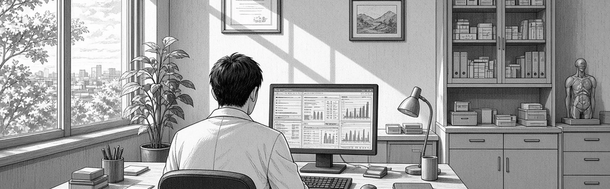
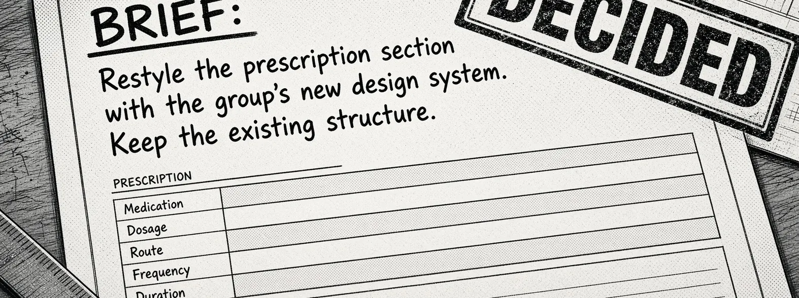
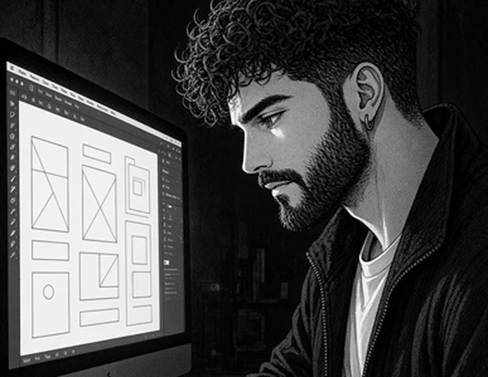
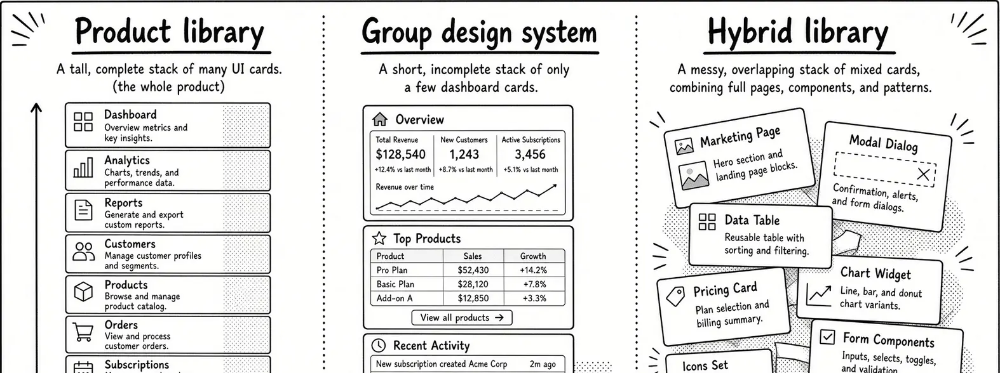
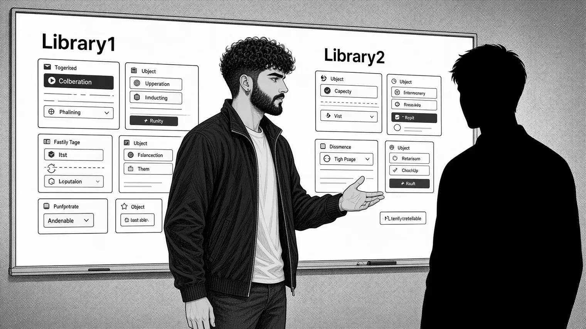
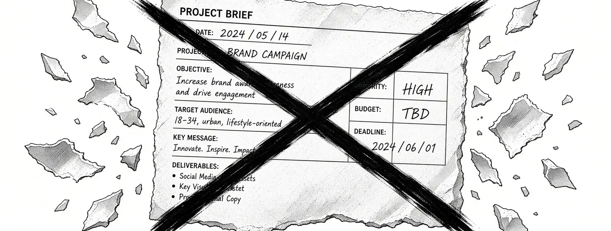
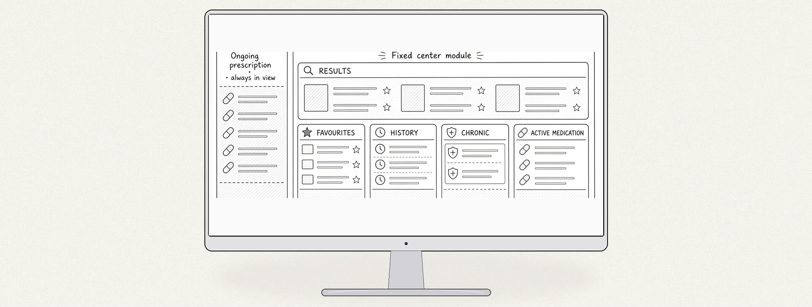
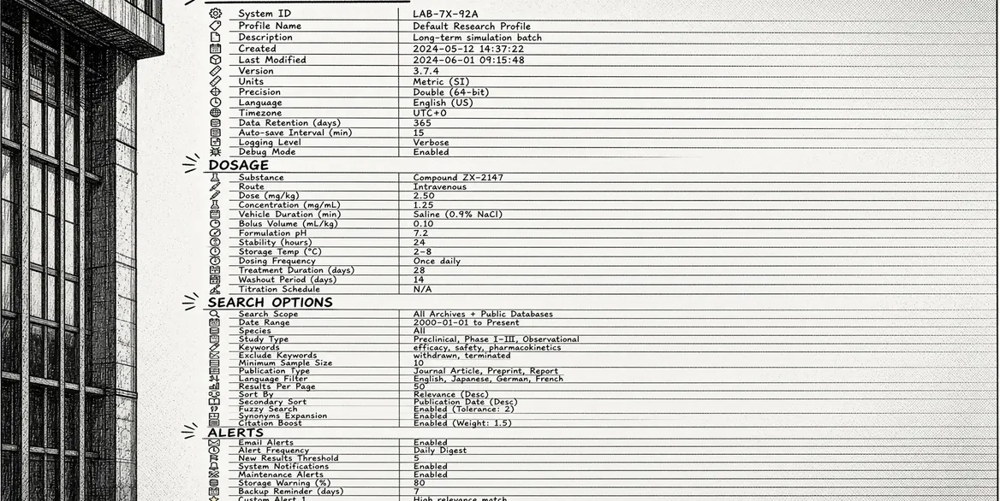
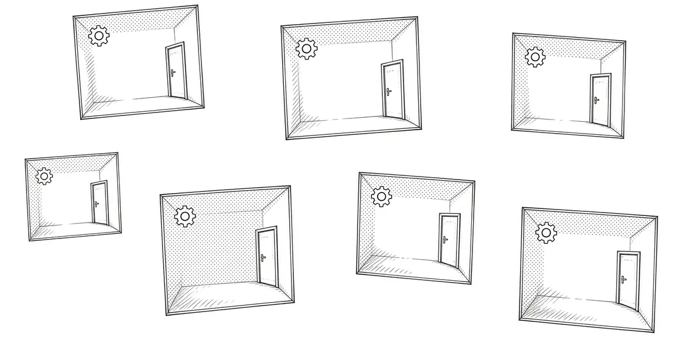
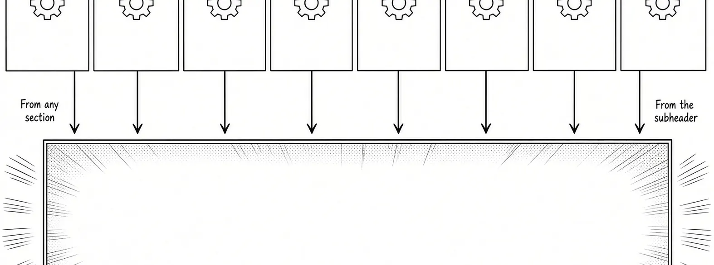

Rethinking prescription, beyond the brief
A restyle reached me already decided. I proved in Figma that it couldn't ship, and the plan was dropped. I designed a modular screen where search and the ongoing prescription never leave view and, without being asked, gathered eight sections of settings into one dashboard.
Context and my role

Cegedim. A clinical practice platform used by doctors.
Prescribing is its most safety-critical flow: a doctor under time pressure, a dense screen, regulatory constraints.
I'm its reference designer. I hold the view of the whole application, so I see how sequences connect across sections.
I also build the product's own design system, alone, and I'm the only Spain-based member of the team building the group's, with France.
The brief I inherited

June 2025. The brief arrived decided.
Its goal is design-system adoption. Not the problem doctors have with this screen.
I wasn't part of that decision. My job, on paper, was to execute it.
Why it couldn't ship, and how I proved it
It failed on two fronts at once.
The new system was young. Many of the product's components didn't exist yet, and the release had no time to build them.
And the layout kept the real problem: the lack of vertical space.

Instead of arguing it, I built a proof of concept in Figma.

It exposed the real cost: three libraries to maintain.
I framed it as time spent in design and development, not as a matter of taste.
Getting the architect, then the PM, on board
I went to the software architect first.
It doesn't fix the vertical space, and it needs a third library.

The architect confirmed the diagnosis: to ship, the section had to use the product's own library.
With that technical backing, I took it to the Product Manager.

STOP!
The original plan was dropped.
We agreed on a layout similar to other sections of the product, and left the integration with the new design system for a future version.
The reframe: search and the prescription always in view

A modular system around what a doctor can't lose while prescribing.
Always visible, one click away: the search bar and the ongoing prescription, with every medicine added before it's validated.
Secondary content takes the central space when it's needed, without pushing search or the prescription out of view.
Validated by the Product Committee, a fortnightly panel of doctors.
Beyond the brief: one dashboard for every setting

Prescription alone had a long list of settings.

Seven other sections had their own, each kept inside its section. Changing one meant knowing where it lived.
Nobody asked me to fix this.
It came out of the analysis.

I gathered every parameter from all eight sections into one settings dashboard. From any section, it opens at that section's settings; from the subheader, a search across all of them.
Shipped.
The modular screen and the dashboard shipped together, in the version I defined.
What it led to: a rule for the migration
The product's own library has an end date: the plan is to migrate to the group's design system. The question the proof of concept raised still needed an answer: how to move without mixing two systems.
I led that debate with the architect, the Product Managers and the Product Owners, and made the call.
Since June 2026
Every new full section, modal with a backdrop or full-width dialog is designed and built in the group's system.
Doctors never see two styles mixed in the same interface. Next: a migration method based on the system's foundations.